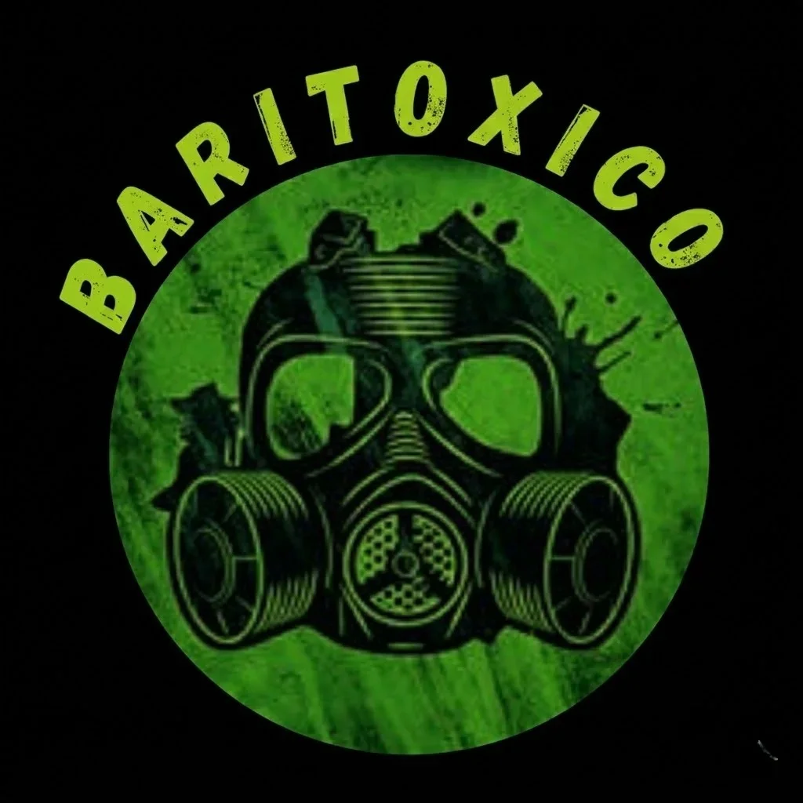

¿Querés reducir tu huella en el planeta?
¿Separás pero no sabés dónde llevar tus reciclables?
¿Querés empezar a compostar?
Acá encontrarás dónde llevar tus reciclables
Recordá: Todos los materiales deben estar limpios y secos.
Instalá la app para usarla más rápido y sin internet.